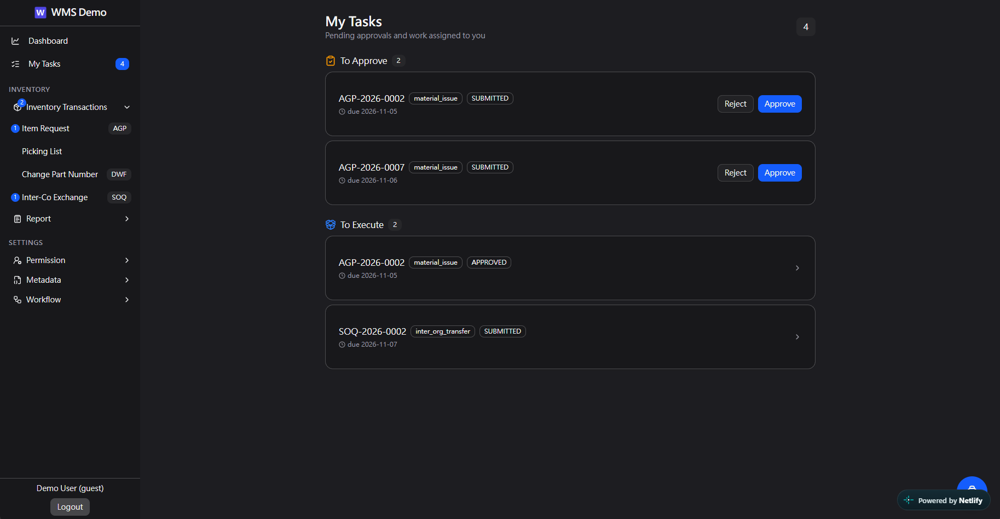
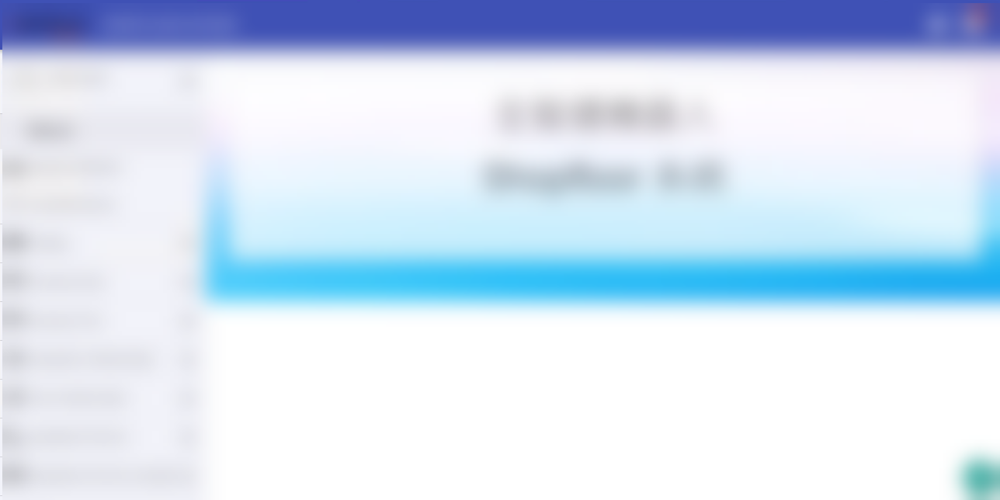
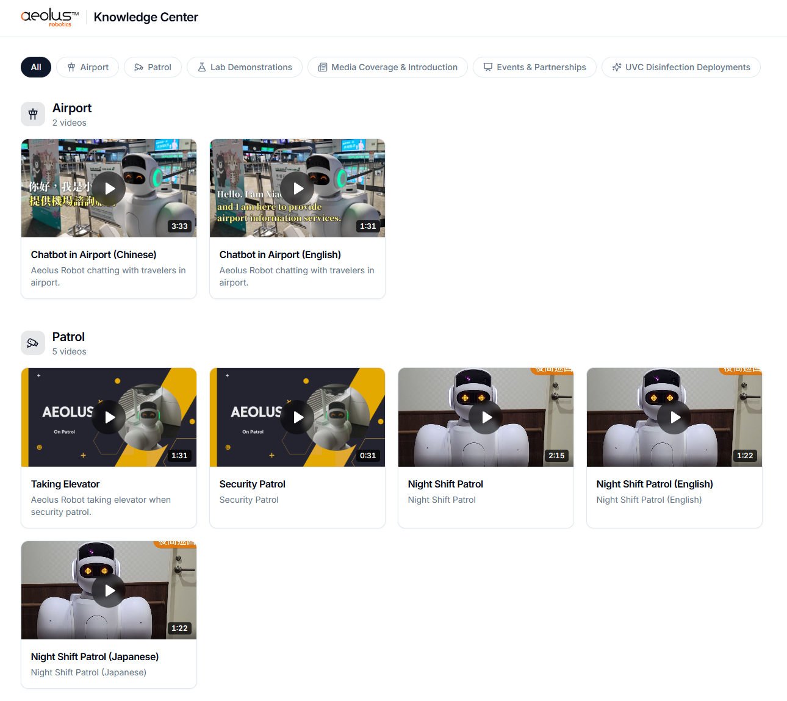
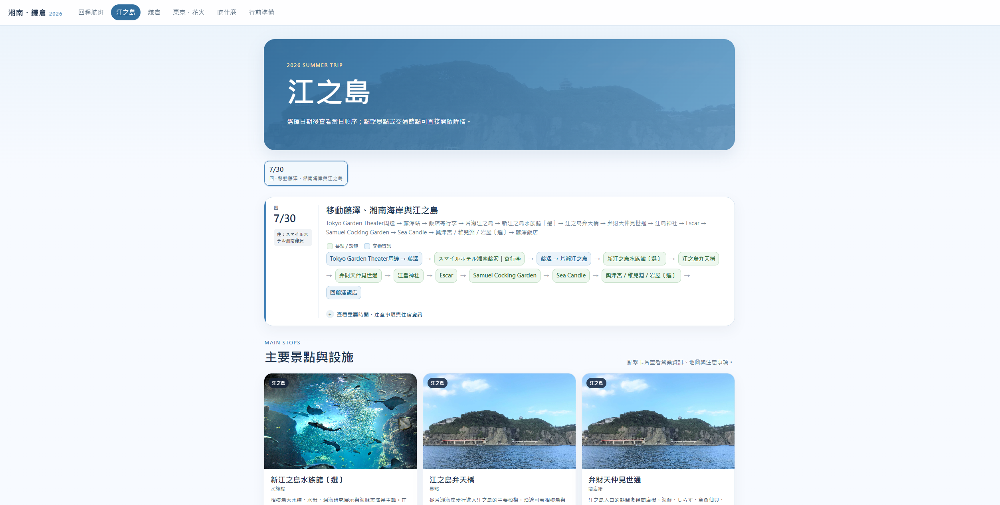

Backend & Data
GinGORMCasbin
MS SQLMariaDB / MySQLSAP HANA
SOLUTION ARCHITECT
Internal Systems · Software Engineering · Cloud & Platform
從 Infrastructure、Software Engineering 到 Systems Analysis，累積超過 10 年企業 IT 與系統開發經驗。 專注於將實際業務需求轉換為可落地、可維護、可持續演進的技術方案。
PROFILE
擅長從使用者與業務需求出發，釐清真正需要解決的問題，再將需求轉換為 workflow、data model、API、 UI/UX、application architecture 與 deployment architecture。除了系統分析與架構設計，也具備實際的 軟體開發、系統整合、Cloud 與 Kubernetes 平台建置能力。
近年亦將 AI 納入實際工程流程：先建立 architecture、coding conventions、shared modules 與 implementation constraints，再利用 AI 協助實作並進行 code structure 與 architecture review。
PROFESSIONAL DOMAINS
TECHNICAL SKILLS
預設 關聯 主要關聯
實務中使用過、用來支援主要能力的技術與工具。
SELECTED PROJECTS

PROFESSIONAL PROJECT
以 React / Next.js 建立的內部 Web System，整合使用者權限、SAP 表單申請、庫存查詢與視覺化，以及簽核流程。

PROFESSIONAL PROJECT
將製造現場的生產流程、測試資料、生產履歷與工單資訊系統化整合，並定義跨工具共用的資料介面。
此 Demo 因存取控制與獨立運行環境需求，平時不對外常駐開放；可於需要時提供展示。

PROFESSIONAL PROJECT
依業務展示需求建立可持續維護的多媒體平台，將內容更新流程與 application code 解耦。

PERSONAL PROJECT
把真實旅行中的模糊需求，透過 Systems Analysis、Information Architecture、UI/UX 與 AI-assisted Engineering 轉換為實際可使用的行程 Web App。
PERSONAL R&D · IN PROGRESS
研究將長時間日文 VTuber 影片自動轉換為日文／繁中雙語字幕的 AI pipeline，重點放在可重現評估與架構取捨。
PROFESSIONAL EXPERIENCE
2020.03 — Present
System Analyst
2019.12 — 2020.02
Freelance Software Engineer
直接與製造業客戶訪談，從現場 workflow、UI 設計一路完成應用程式開發，建立 end-to-end delivery 經驗。
2019.06 — 2019.11
Software Engineer
維護財政部電子發票 integration API、產品 SDK 與會員後台，並撰寫新專案程式架構文件。
2015.04 — 2019.06
MIS Engineer → Software Engineer
CAREER EVOLUTION
MIS Engineer
Software Engineer
Manufacturing & Enterprise Systems
Internal Systems · Platform · AI
LANGUAGE
母語
可閱讀技術文件，並進行工作與技術溝通 · 歷史 TOEIC 720
基礎日常對話與閱讀，可理解部分日文操作文件
EDUCATION
Bachelor of Science in Computer Science / 資訊工程學士
PROFESSIONAL SUMMARY
From infrastructure to applications, from requirements to production.
我的核心能力並不是單一程式語言或特定平台，而是能理解一個問題在 Business Process、Application、 Data、Integration 與 Infrastructure 各層面的需求與限制，並選擇適合組織規模、成本與維護方式的技術方案。
過去的 IT Infrastructure 經驗讓我理解系統運作的基礎，Software Engineering 經驗讓我能親自實現設計， Systems Analysis 經驗讓我能將使用者需求轉換為清楚流程，而目前的工作則將這些能力整合成完整的 Solution Architecture。